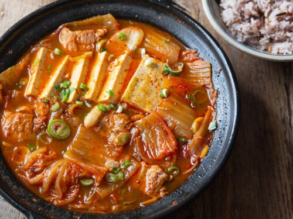

Kimchi Stew Recipe

A Korean comfort stew dish
This is a Korean Stew made with kimchi and usually some kind of pork.
Ingredients
- 1 pound kimchi, cut into bite size pieces
- ¼ cup kimchi brine
- ½ pound pork shoulder (or pork belly)
-
½ package of tofu (optional), sliced into ½ inch thick bite size pieces
- 3 green onions
- 1 medium onion, sliced (1 cup)
- 1 teaspoon kosher salt
- 2 teaspoons sugar
- 2 teaspoons gochugaru (Korean hot pepper flakes)
- 1 tablespoon gochujang (hot pepper paste)
- 1 teaspoon toasted sesame oil
- 2 cups of anchovy stock (or chicken or beef broth)
Stock
- 7 large dried anchovies, heads and guts removed
- ⅓ cup Korean radish (or daikon radish), sliced thinly
- 4x5 inch dried kelp
- 3 green onion roots
- 4 cups water
Cooking Directions
Stock
-
Put the anchovies, daikon, green onion roots, and dried kelp in a sauce
pan.
- Add the water and boil for 20 minutes over medium high heat.
- Lower the heat to low for another 5 minutes.
- Strain.
Stew
-
Place the kimchi and kimchi brine in a shallow pot. Add pork and onion.
- Slice 2 green onions diagonally and add them to the pot.
-
Add salt, sugar, hot pepper flakes, and hot pepper paste. Drizzle sesame
oil over top and add the anchovy stock.
- Cover and cook for 10 minutes over medium high heat.
-
Open and mix in the seasonings with a spoon. Lay the tofu over top.
- Cover and cook another 10 to 15 minutes over medium heat.
-
Chop 1 green onion and put it on the top of the stew. Remove from the
heat and serve right away with rice.